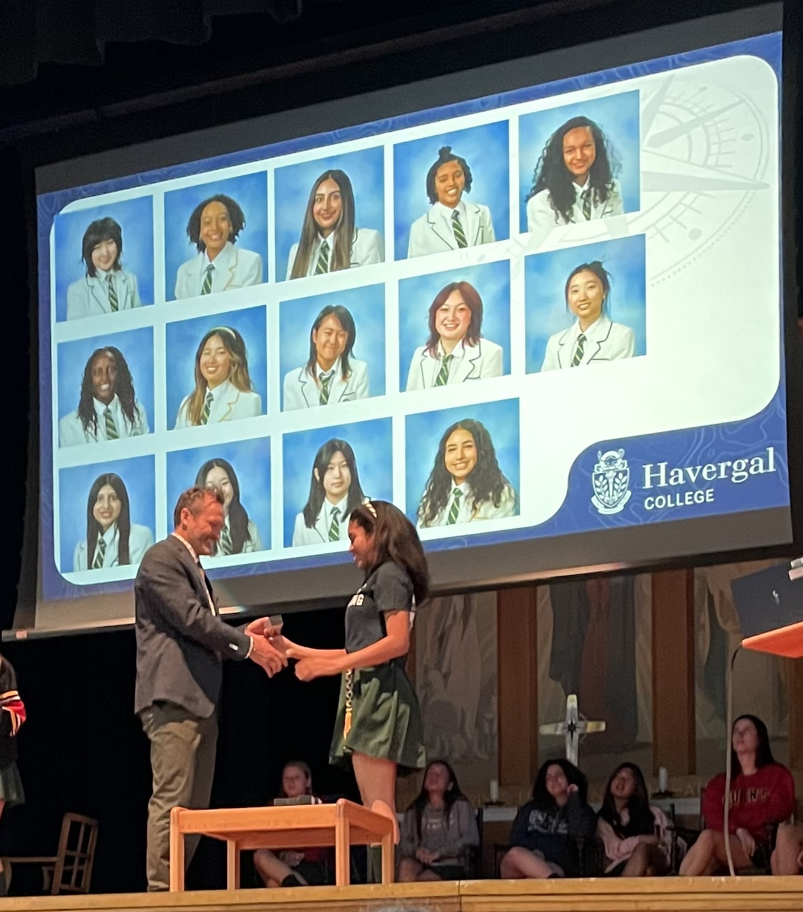

Being a Relay for Life team captain was a delightful experience because of the real-world impact that I could make for my family! Within this role, I continuously advocated for one hundred percent participation because every dollar counts towards funding cancer research and promoting a stronger society. In less than a month, the 12 of us were able to collectively raise over $2000; and on the day of the event, we celebrated the cancer survivors, reflected on who we relay for, and walked for them and those who left us too soon.
Once I was selected at the start of my grade 10 year, I had the privilege to participate in social justice & DEI, social innovation, global citizenship, and developing cultural competence modules. I actively reflected on my level of mastering the global, learning, and leading skills and principles. The program culminated with a final research project during grade 12. I chose to focus on a topic that captures my passions and current study, which was generative AI’s consequences and implications on education within and beyond my school community. I was in charge of the research and presentation design and was given the platform to present to and facilitate a discussion with a panel of two high school students and two faculty members.
Image Credit: Havergal College Photographer
When I was appointed the committee lead position, I was in charge of organizing the prayer schedule by collaborating with the music and prayers representatives. In order to maximize efficiency leading up to the event and diversity and inclusion within the event itself, I ensured that five students would be able to speak during the gathering. Some of the Black Student Affinity (BSA) members, including myself, gathered a few instances prior in order to rehearse the song that we sang during curtain closing. The event also included a steel pan performance by one of the BSA students and a flag procession where each BSA student walked/ran into the hall with the flag(s) that represented their Black heritage. The main presentation was given by two guest speakers: Justice and Nia Faith. They shared their experiences in entrepreneurship, especially as Black women, and their advice on how to create positive change while staying true to your values. I also had the opportunity to direct the meeting that shaped the presentation of our inspirational guest speakers.